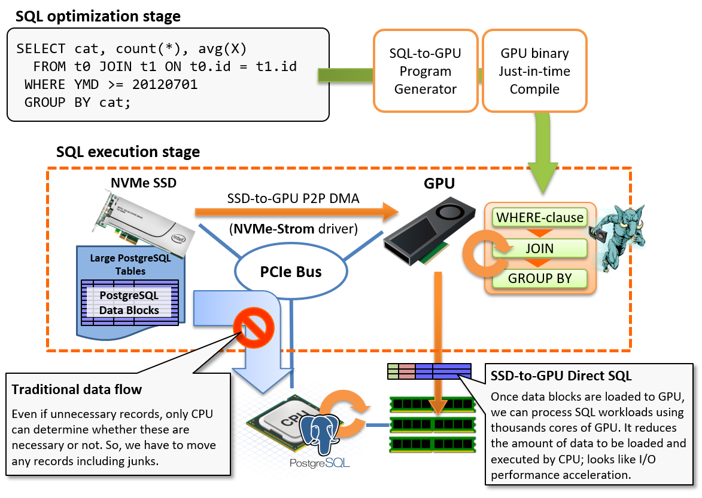
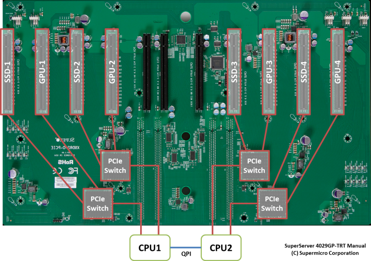

SSD-to-GPU Direct SQL Execution
Overview
For the fast execution of SQL workloads, it needs to provide processors rapid data stream from storage or memory, in addition to processor's execution efficiency. Processor will run idle if data stream would not be delivered.
SSD-to-GPU Direct SQL Execution directly connects NVMe-SSD which enables high-speed I/O processing by direct attach to the PCIe bus and GPU device that is also attached on the same PCIe bus, and runs SQL workloads very high speed by supplying data stream close to the wired speed of the hardware.
Usually, PostgreSQL data blocks on the storage shall be once loaded to CPU/RAM through the PCIe bus, then, PostgreSQL runs WHERE-clause for filtering or JOIN/GROUP BY according to the query execution plan. Due to the characteristics of analytic workloads, the amount of result data set is much smaller than the source data set. For example, it is not rare case to read billions rows but output just hundreds rows after the aggregation operations with GROUP BY.
In the other words, we consume bandwidth of the PCIe bus to move junk data, however, we cannot determine whether rows are necessary or not prior to the evaluation by SQL workloads on CPU. So, it is not avoidable restriction in usual implementation.

SSD-to-GPU Direct SQL Execution changes the flow to read blocks from the storage sequentially. It directly loads data blocks to GPU using peer-to-peer DMA over PCIe bus, then runs SQL workloads on GPU device to reduce number of rows to be processed by CPU. In other words, it utilizes GPU as a pre-processor of SQL which locates in the middle of the storage and CPU/RAM for reduction of CPU's load, then tries to accelerate I/O processing in the results.
This feature internally uses NVIDIA GPUDirect RDMA. It allows peer-to-peer data transfer over PCIe bus between GPU device memory and third parth device by coordination using a custom Linux kernel module. So, this feature requires NVMe-Strom driver which is a Linux kernel module in addition to PG-Strom which is a PostgreSQL extension module.
Also note that this feature supports only NVMe-SSD. It does not support SAS or SATA SSD. We have tested several NVMe-SSD models. You can refer 002: HW Validation List for your information.
System Setup
Driver Installation
nvme_strom package is required to activate SSD-to-GPU Direct SQL Execution. This package contains a custom Linux kernel module which intermediates P2P DMA from NVME-SSD to GPU. You can obtain the package from the HeteroDB Software Distribution Center.
If heterodb-swdc package is already installed, you can install the package by yum command.
$ sudo yum install nvme_strom
:
================================================================================
Package Arch Version Repository Size
================================================================================
Installing:
nvme_strom x86_64 0.8-1.el7 heterodb 178 k
Transaction Summary
================================================================================
Install 1 Package
:
DKMS: install completed.
Verifying : nvme_strom-0.8-1.el7.x86_64 1/1
Installed:
nvme_strom.x86_64 0:0.8-1.el7
Complete!
Once nvme_strom package gets installed, you can see nvme_strom module using lsmod command below.
$ lsmod | grep nvme
nvme_strom 12625 0
nvme 27722 4
nvme_core 52964 9 nvme
Designing Tablespace
SSD-to-GPU Direct SQL Execution shall be invoked in the following case.
- The target table to be scanned locates on the partition being consist of NVMe-SSD.
/dev/nvmeXXXXblock device, or md-raid0 volume which consists of NVMe-SSDs only.
- The target table size is larger than
pg_strom.nvme_strom_threshold.- You can adjust this configuration. Its default is physical RAM size of the system plus 1/3 of
shared_buffersconfiguration.
- You can adjust this configuration. Its default is physical RAM size of the system plus 1/3 of
Note
Striped read from multiple NVMe-SSD using md-raid0 requires the enterprise subscription provided by HeteroDB,Inc.
In order to deploy the tables on the partition consists of NVMe-SSD, you can use the tablespace function of PostgreSQL to specify particular tables or databases to place them on NVMe-SSD volume, in addition to construction of the entire database cluster on the NVMe-SSD volume.
For example, you can create a new tablespace below, if NVMe-SSD is mounted at /opt/nvme.
CREATE TABLESPACE my_nvme LOCATION '/opt/nvme';
In order to create a new table on the tablespace, specify the TABLESPACE option at the CREATE TABLE command below.
CREATE TABLE my_table (...) TABLESPACE my_nvme;
Or, use ALTER DATABASE command as follows, to change the default tablespace of the database.
Note that tablespace of the existing tables are not changed in thie case.
ALTER DATABASE my_database SET TABLESPACE my_nvme;
Distance between GPU and NVME-SSD
On selection of server hardware and installation of GPU and NVME-SSD, hardware configuration needs to pay attention to the distance between devices, to pull out maximum performance of the device.
NVIDIA GPUDirect RDMA, basis of the SSD-to-GPU Direct SQL mechanism, requires both of the edge devices of P2P DMA are connected on the same PCIe root complex. In the other words, unable to configure the P2P DMA traverses QPI between CPUs when NVME-SSD is attached on CPU1 and GPU is attached on CPU2 at dual socket system.
From standpoint of the performance, it is recommended to use dedicated PCIe-switch to connect both of the devices more than the PCIe controller built in CPU.
The photo below is a motherboard of HPC server. It has 8 of PCIe x16 slots, and each pair is linked to the other over the PCIe switch. The slots in the left-side of the photo are connected to CPU1, and right-side are connected to CPU2.
When a table on SSD-2 is scanned using SSD-to-GPU Direct SQL, the optimal GPU choice is GPU-2, and it may be able to use GPU1. However, we have to avoid to choose GPU-3 and GPU-4 due to the restriction of GPUDirect RDMA.

PG-Strom calculate logical distances on any pairs of GPU and NVME-SSD using PCIe bus topology information of the system on startup time.
It is displayed at the start up log. Each NVME-SSD determines the preferable GPU based on the distance, for example, GPU1 shall be used on scan of the /dev/nvme2.
$ pg_ctl restart
:
LOG: GPU<->SSD Distance Matrix
LOG: GPU0 GPU1 GPU2
LOG: nvme0 ( 3) 7 7
LOG: nvme5 7 7 ( 3)
LOG: nvme4 7 7 ( 3)
LOG: nvme2 7 ( 3) 7
LOG: nvme1 ( 3) 7 7
LOG: nvme3 7 ( 3) 7
:
Usually automatic configuration works well. In case when NVME-over-Fabric(RDMA) is used, unable to identify the location of nvme device on the PCIe-bus, so you need to configure the logical distance between NVME-SSD and GPU manually.
The example below shows the configuration of gpu2 for nvme1, and gpu1 for nvme2 and nvme3.
It shall be added to postgresql.conf. Please note than manual configuration takes priority than the automatic configuration.
pg_strom.nvme_distance_map = nvme1:gpu2, nvme2:gpu1, nvme3:gpu1
Operations
Controls using GUC parameters
There are two GPU parameters related to SSD-to-GPU Direct SQL Execution.
The first is pg_strom.nvme_strom_enabled that simply turn on/off the function of SSD-to-GPU Direct SQL Execution.
If off, SSD-to-GPU Direct SQL Execution should not be used regardless of the table size or physical location. Default is on.
The other one is pg_strom.nvme_strom_threshold which specifies the least table size to invoke SSD-to-GPU Direct SQL Execution.
PG-Strom will choose SSD-to-GPU Direct SQL Execution when target table is located on NVMe-SSD volume (or md-raid0 volume which consists of NVMe-SSD only), and the table size is larger than this parameter.
Its default is sum of the physical memory size and 1/3 of the shared_buffers. It means default configuration invokes SSD-to-GPU Direct SQL Execution only for the tables where we certainly cannot process them on memory.
Even if SSD-to-GPU Direct SQL Execution has advantages on a single table scan workload, usage of disk cache may work better on the second or later trial for the tables which are available to load onto the main memory.
On course, this assumption is not always right depending on the workload charasteristics.
Ensure usage of SSD-to-GPU Direct SQL Execution
EXPLAIN command allows to ensure whether SSD-to-GPU Direct SQL Execution shall be used in the target query, or not.
In the example below, a scan on the lineorder table by Custom Scan (GpuJoin) shows NVMe-Strom: enabled. In this case, SSD-to-GPU Direct SQL Execution shall be used to read from the lineorder table.
# explain (costs off)
select sum(lo_revenue), d_year, p_brand1
from lineorder, date1, part, supplier
where lo_orderdate = d_datekey
and lo_partkey = p_partkey
and lo_suppkey = s_suppkey
and p_category = 'MFGR#12'
and s_region = 'AMERICA'
group by d_year, p_brand1
order by d_year, p_brand1;
QUERY PLAN
----------------------------------------------------------------------------------------------
GroupAggregate
Group Key: date1.d_year, part.p_brand1
-> Sort
Sort Key: date1.d_year, part.p_brand1
-> Custom Scan (GpuPreAgg)
Reduction: Local
GPU Projection: pgstrom.psum((lo_revenue)::double precision), d_year, p_brand1
Combined GpuJoin: enabled
-> Custom Scan (GpuJoin) on lineorder
GPU Projection: date1.d_year, part.p_brand1, lineorder.lo_revenue
Outer Scan: lineorder
Depth 1: GpuHashJoin (nrows 2406009600...97764190)
HashKeys: lineorder.lo_partkey
JoinQuals: (lineorder.lo_partkey = part.p_partkey)
KDS-Hash (size: 10.67MB)
Depth 2: GpuHashJoin (nrows 97764190...18544060)
HashKeys: lineorder.lo_suppkey
JoinQuals: (lineorder.lo_suppkey = supplier.s_suppkey)
KDS-Hash (size: 131.59MB)
Depth 3: GpuHashJoin (nrows 18544060...18544060)
HashKeys: lineorder.lo_orderdate
JoinQuals: (lineorder.lo_orderdate = date1.d_datekey)
KDS-Hash (size: 461.89KB)
NVMe-Strom: enabled
-> Custom Scan (GpuScan) on part
GPU Projection: p_brand1, p_partkey
GPU Filter: (p_category = 'MFGR#12'::bpchar)
-> Custom Scan (GpuScan) on supplier
GPU Projection: s_suppkey
GPU Filter: (s_region = 'AMERICA'::bpchar)
-> Seq Scan on date1
(31 rows)
Attension for visibility map
Right now, GPU routines of PG-Strom cannot run MVCC visibility checks per row, because only host code has a special data structure for visibility checks. It also leads a problem.
We cannot know which row is visible, or invisible at the time when PG-Strom requires P2P DMA for NVMe-SSD, because contents of the storage blocks are not yet loaded to CPU/RAM, and MVCC related attributes are written with individual records. PostgreSQL had similar problem when it supports IndexOnlyScan.
To address the problem, PostgreSQL has an infrastructure of visibility map which is a bunch of flags to indicate whether any records in a particular data block are visible from all the transactions. If associated bit is set, we can know the associated block has no invisible records without reading the block itself.
SSD-to-GPU Direct SQL Execution utilizes this infrastructure. It checks the visibility map first, then only "all-visible" blocks are required to read with SSD-to-GPU P2P DMA.
VACUUM constructs visibility map, so you can enforce PostgreSQL to construct visibility map by explicit launch of VACUUM command.
VACUUM ANALYZE linerorder;